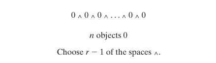

Probability and Counting
The Basic Principle of Counting
假设需要进行两个实验(experiment),实验1有\(m\)种可能的结果,对于实验1中的每一种结果,实验2都会有\(n\)种可能的结果,那么两个实验一共会有\(mn\)种结果
证明: 我们可以通过枚举两个实验的所有结果来证明上面的基本原则,也就是 $$ \begin{aligned} &(1,1),(1,2),\cdots,(1,n) \\ &(2,1),(2,2),\cdots,(2,n) \\ &\vdots \\ &(m,1),(m,2),\cdots,(m,n) \end{aligned} $$ 从上面的结果可以看出,所有可能的结果一共有\(m\)行,每行有\(n\),一共有\(mn\)个结果.\(\blacksquare\)
当进行的实验大于2个时,计数的基本原则(The Basic Principle of Counting)可以被扩展:
假设需要进行\(r\)个实验,实验1有\(n_1\)种可能的结果,对于实验1中的每一种结果,实验2都会有\(n_2\)种可能的结果,对于实验2中的每一种结果,实验3都会有\(n_3\)种可能的结果,以此类推, 那么这\(r\)个实验一共会有
\(n_1\cdot n_2\cdots n_r\)种结果
Permutations
假设现在有\(n\)个物品,那么会有 $$ n(n-1)(n-2)\cdots3\cdot2\cdot1=n! $$ 种不同的排列(permutations).
约定\(0!=1\)
在\(n\)个对象中，若有\(n_1\)个相同(alike),\(n_2\)个相同\(\cdots n_r\)个相同,则这些对象的不同排列数为 $$ \frac{n!}{n_1!n_2!\cdots n_r!} $$
相同的含义
相同(alike)是指对象之间完全不可区分,交换后不会产生新排列
Combinations
定义 $$ \binom nr=\frac{n!}{(n-r)! r!} $$ 表示一次从\(n\)个物体种取出\(r\)个物体时可能的组合数量并且选择的顺序并不重要.
\(\dbinom nr\)也可以表示从一个有\(n\)个元素的集合中选择出有\(r\)个元素的子集.因此 $$ \binom nn=\binom n0=1 $$ 因为\(n\)个元素和\(0\)个元素的子集都只有一个(即它本身和空集).
当\(r>n\)或\(r<0\)时,我们约定\(\dbinom nr=0\).
下面这个恒等式被称为帕斯卡恒等式(Pascal’s identity) $$ \binom nr=\binom {n-1}{r-1}+\binom {n-1}r \qquad 1\le r\le n $$ 数值\(\dbinom nr\)被称为二项式系数(binomial coefficients),因为它出现在二项式定理(binomial theorem)中: $$ (x+y)^n=\sum_{k=0}^n\binom nkx^ky^{n-k} $$
Multinomial Coefficients
将\(n\)个不同的物体分为\(r\)个不同的组,每组的个数依次为\(n_1, n_2,\cdots,n_r\),并且\(\sum\limits_{i=1}^r n_i=n\). 一共会有多少种可能的分法? 对于第一组,有\(\dbinom n{n_1}\)种可能;对于第二组,有\(\dbinom {n-n_1}{n_2}\)种可能,对于第三组,有\(\dbinom {n-n_1-n_2}{n_3}\)种可能.以此类推,对于第\(r\)组,会有有\(\dbinom {n-n_1-n_2-\cdots-n_{r-1}}{n_r}\)种可能.根据推广后的计数基本原则,得到
总结一下上面的描述,如果\(n_1+n_2+\cdots+n_r=n\), 我们将\(\binom n{n_1,n_2,\cdots,n_r}\)定义为 $$ \binom n{n_1,n_2,\cdots,n_r}=\frac{n!}{n_1!n_2!\cdots n_r!} $$ 表示将\(n\)个不同的物体分为\(r\)个不同的组,每组的个数依次为\(n_1, n_2,\cdots,n_r\)的分法.
利用上面的式子,可以将二项式定理进行推广,得到下面的多项式定理(multinomial theorem)
\(\dbinom n{n_1,n_2,\cdots,n_r}\)被称为多项式系数(multinomial coefficients).
The Number of Integer Solutions of Equations
考虑下面的方程 $$ x_1+x_2+\cdots+x_r=n $$ 为得到这个方程的解,假设现在有\(n\)个排成一行的0,如下图

相当于将\(n\)个0分成\(r\)个不同的组,\(x_1\)代表第一组,\(x_2\)代表第二组,以此类推.而每一组内0的个数就是对于未知数的值.对应于上图,就是在\(n-1\)个空位中(^)选择\(r-1\)个位置插入分隔,因此,可以得到下面这个命题:
命题1
有\(\dbinom {n-1}{r-1}\) 个不同的正整数值向量\((x_1,x_2,\cdots,x_r)\)满足 $$ x_1+x_2+\cdots+x_r=n,\qquad x_i>0,\qquad i=1,\cdots,r $$
为了得到非负数解的个数,可以令\(y_i=x_i+1\),那么原方程就会变为\(y_1+y_2+\cdots+y_r=n+r\).然后使用上面的命题,便可以得到:
命题2
有\(\dbinom {n+r-1}{r-1}\) 个不同的非负整数值向量\((x_1,x_2,\cdots,x_r)\)满足 $$ x_1+x_2+\cdots+x_r=n $$
Sample Space and Events
对于一个无法准确预测结果的实验,虽然我们在实验之前不知道准确的结果,但是实验的所有结果是已知的.这个实验的所有结果组成的集合被称为样本空间(sample space),记为\(S\).
样本空间的任何一个子集\(E\)被称为事件(event),也就是说,事件是由实验可能的结果组成的集合.如果实验的结果包含\(E\),那么事件\(E\)就发生(occur)了.
假设事件\(E\)和\(F\)是样本空间\(S\)中的两个事件,事件\(E\cup F\)称为\(E\)和\(F\)的并集(union),包含所有在\(E\)或\(F\)或同时在\(E\)和\(F\)中的结果
如果\(E\)或\(F\)发生,那么\(E\cup F\)就会发生
假设事件\(E\)和\(F\)是样本空间\(S\)中的两个事件,事件\(EF\)(也可以写为\(E\cap F\))称为\(E\)和\(F\)的交集(intersection),包含同时在\(E\)和\(F\)中的结果
如果\(E\)和\(F\)都发生,那么\(EF\)就会发生
空事件(null event)是一个不包含任何结果的事件,记为\(\varnothing\) 如果\(EF=\varnothing\),那么事件E和F被称为互斥事件(mutually exclusive)
\(n\)个事件的并集和交集
事件\(E_1,E_2,\cdots\)的并集记为\(\bigcup\limits_{n=0}^{\infty} E_n\),表示在\(E_n\)中的所有结果
事件\(E_1,E_2,\cdots\)的交集记为\(\bigcap\limits_{n=0}^{\infty} E_n\),表示在每一个\(E_n\)中的都有的结果
假设事件\(E\)是样本空间\(S\)中的一个事件,事件\(E^c\)称为\(E\)的补(complement),包含样本空间中不在\(E\)中的结果.
因为实验一定产生一些结果,因此\(S^c=\varnothing\)
如果两个事件\(E\)和\(F\),\(E\)的所有结果也在\(F\)中,那么\(E\)被包含(contain)在\(F\)中;或者\(E\)是\(F\)的子集(subset),记作\(E\subset F\)
下面的式子被称为德摩根定律(DeMorgan's Laws),它表示了并集交集和补集之间的关系. $$ \begin{aligned} \left(\bigcup_{i=1}^nE_i\right)^c=\bigcap_{i=1}^nE_i^c \\ \left(\bigcap_{i=1}^nE_i\right)^c=\bigcup_{i=1}^nE_i^c \end{aligned} $$
韦恩图(Venn diagram)是表示这些事件包含、交集、并集关系的直观图形表达方式
Axioms of Probability
概率可以被定义为实验不断重复时某个事件发生的长期相对频率(long run relative frequency).具体来说,对于一个样本空间为\(S\)的实验,在一定的条件下不断重复.将\(E(n)\)定义为事件\(E\)在前\(n\)次重复中发生的次数,那么事件E的概率为 $$ P(E)=\lim_{n\to\infty}\frac{n(E)}{n} $$ 虽然这个定义非常符合直觉,但是它有几个缺点:
- 我们无法先验地证明\(\dfrac{n(E)}n\) 一定会收敛于某一个常数，且每次重复整个实验序列都能收敛到同一个值
- 每次重复整个实验序列都能收敛到同一个值
因此我们采用先假定一些简单的,显而易见的公理,然后再证明频率在某种条件下趋于一个常熟.下面给出概率的三个公理.其中\(E\)为样本空间\(S\)中的一个事件
公理1: $$ 0\le P(E)\le1 $$ 公理2: $$ P(S) =1 $$ 公理3: 对于互斥事件\(E_1,E_2,\cdots\) $$ P\left(\bigcup_{i=1}^{\infty}E_i\right)=\sum_{i=0}^{\infty}P(E_i) $$
假设存在一系列事件\(E_1,E_2,\cdots,E_n\),其中\(E_1=S\),\(E_i=\varnothing, i > 1\) 因为上述事件为互斥事件,根据公理3可以得到 $$ P(S)=\sum_{i=1}^\infty P(E_i)=P(S)+\sum_{i=2}^\infty P(\varnothing) $$ 即\(P(\varnothing)=0\).
Some Simple Propositions
命题1 $$ P(E^c)=1-P(E) $$
证明
$$ \begin{aligned} P(S)&=P(E\cup E^c)\\ &=P(E)+P(E^c) \\ &=1 \end{aligned} $$ 所以\(P(E^c)=1-P(E)\).
命题2 如果\(E\subset F\),那么\(P(E)\le P(F)\)
证明
因为\(E\subset F\),所以 $$ F=E\cup E^cF $$ 因为\(E\)与\(E^cF\)是互斥事件,所以 $$ P(F)=P(E)+P(E^cF)\ge P(E) $$
命题3 $$ P(E\cup F)=P(E)+P(F)-P(EF) $$
证明
因为\(P(E\cup F)=P(E\cup E^cF)\)且\(E\)和\(E^cF\)是互斥事件,所以 $$ P(E\cup F)=P(E)+P(E^cF) \tag{2.1} $$ 又因为\(P(F)=P(EF\cup E^cF)\)且\(EF\)是\(E^cF\)互斥事件,所以 $$ P(F)=P(EF)+P(E^cF) $$ 移项得到 $$ P(E^cF)=P(F)-P(EF)\tag{2.2} $$ 将(2.2)带入(2.1)即可得到结果
命题4(容斥原理, inclusion-exclusion identity) $$ \begin{aligned} P(E_1\cup E_2\cup\cdots\cup E_n)&=\sum_{i=1}^nP(E_i)-\sum_{i_1<i_2}P(E_{i_1}E_{i_2})+\cdots \\ &+(-1)^{r+1}\sum_{i_1<i_2<\cdots<i_r}P(E_{i_1}E_{i_2}\cdots E_{i_r})\\ &+\cdots+(-1)^{n+1}P(E_1E_2\cdots E_n) \end{aligned} $$ 上面的式子可以简写为 $$ P(\bigcup_{i=1}^nE_i)=\sum_{r=1}^n(-1)^{r+1}\sum_{i_1<\cdots<i_r}P(E_{i_1}\cdots E_{i_r}) $$
Boole不等式可以由容斥原理第一项得到 $$ P(\bigcup_{i=1}^nE_i)\le\sum_{i=1}^nP(E_i) $$
Sample Spaces Having Equally Likely Outcomes
对于一个样本空间为有限集的实验,其中样本空间\(S={1,2,\cdots,N}\),通常可以假设 $$ P({1})=P({2})=\cdots=P({N})=\frac1N $$
因此,对于任何事件\(E\)都有 $$ P(E)=\frac{\text{number of outcomes in }E}{\text{number of outcomes in }S} $$
此时就将问题转化为了求满足事件的结果数,可以通过第一章的方法进行计算
Probability as a Measure of Belief
到目前为止,概率一直被解释为实验不断重复时某个事件发生的“长期相对频率”。而在很多场景中，概率也可以解释为个人对某个事件的相信程度(度量)。
例子
- 宣称“莎士比亚写出《哈姆雷特》的概率是90%”
- “奥斯瓦尔德单独刺杀肯尼迪的概率是0.8”
无论将概率解释为长期频率，还是作为个人信念的度量,它的数学性质完全保持不变,即 信念度量也必须严格满足概率的所有基本公理。但是在现实中,未经仔细推敲的普通人往往会给出违背概率公理的结论。当发现主观直觉违背概率公理时,必须调整我们的信念使其符合公理。然后,我们就可以像处理客观概率一样,利用这些主观概率来计算期望值并做出最优决策
Supplement
Bonferroni不等式(Bonferroni's inequality) $$ P(EF)\ge P(E)+P(F)-1 $$
证明
根据容斥原理(命题3)与公理1, 即 $$ \begin{aligned} &P(E\cup F)=P(E)+P(F)-P(EF) \\ &0\le P(E\cap F)\le 1 \end{aligned} $$ 得到 $$ \begin{aligned} P(EF)&=P(E)+P(F)-P(E\cup F) \\ &\ge P(E)+P(F)-1 \end{aligned} $$
Bonferroni's不等式的推广 $$ P(E_1E_2\cdots E_n)\ge P(E_1)+P(E_2)+\cdots+P(E_n)-(n-1) $$
证明
使用数学归纳法,设命题\(Q(n)\), \(n\ge1\)为\(P(E_1E_2\cdots E_n)\ge P(E_1)+P(E_2)+\cdots+P(E_n)-(n-1)\)
基础步骤: \(Q(1)\)为\(P(E_1)\ge P(E_1)\),显然为真 \(Q(2)\)为\(P(EF)\ge P(E)+P(F)-1\),已经证明.
归纳步骤:
假设\(Q(k),k\ge1\)为真,即\(P(E_1E_2\cdots E_k)\ge P(E_1)+P(E_2)+\cdots+P(E_k)-(k-1)\)
那么需要证明\(Q(k+1)\)即\(P(E_1E_2\cdots E_kE_{k+1})\ge P(E_1)+P(E_2)+\cdots+P(E_k)+P(E_{k+1})-k\)为真
首先令事件\(F=E_1E_2\cdots E_k\),则
$$
\begin{aligned}
P(E_1E_2\cdots E_kE_{k+1})&=P(FE_{k+1}) \\
&\ge P(F)+P(E_{k+1})-1 \\
&\ge P(E_1)+P(E_2)+\cdots+P(E_k)+P(E_{k+1})-(k-1)-1 \\
&=P(E_1)+P(E_2)+\cdots+P(E_k)+P(E_{k+1})-k
\end{aligned}
$$
\(\blacksquare\).